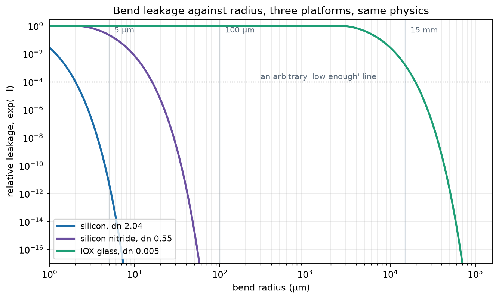

The complete derivation, in thirteen steps, with what each one means. Nothing is
assumed except Maxwell's equations and one approximation about weakly guiding
materials, which is named where it is used. The result is a formula that
predicts why a glass waveguide needs a centimetre to turn and a silicon one
needs five micrometres.
The symbols
Symbol
Name
Units
E
electric field
V/m
D
electric displacement
C/m²
H
magnetic field strength
A/m
B
magnetic flux density
T
P
polarization, dipole moment per volume
C/m²
ρf, Jf
free charge and current density
C/m³, A/m²
ε₀, μ₀
vacuum permittivity and permeability
F/m, H/m
χ, εr
susceptibility, relative permittivity
dimensionless
n, n₁, n₂
refractive index; core and cladding values
dimensionless
c, ω, k₀
speed of light, angular frequency, k₀ = ω/c = 2π/λ
m/s, rad/s, rad/m
β
propagation constant, phase per metre
rad/m
ν
phase per radian around a bend
dimensionless
neff
effective index of a mode, β/k₀
dimensionless
γ
field decay constant in the cladding
1/m
a, R
core radius, bend radius
m
xt
radiation caustic, where the mode stops being bound
m
Step 1
Maxwell's equations
∇·D = ρf
∇·B = 0
∇×E = −∂B/∂t
∇×H = Jf + ∂D/∂t
(1)
Four equations, and none of them mention a material. The material enters through
two definitions and one assumption.
definitions: D ≡ ε₀E + PH ≡ B/μ₀ − M
assumption: P = ε₀·χ·E (linear, isotropic, instantaneous)
(2)
What D is for. A dielectric in a field polarizes: bound charges shift and
create their own opposing field. Writing Gauss's law in terms of E
alone would require knowing every one of them. Defining
D = ε₀E + P hides
all of it, so ∇·D = ρf involves only
the charge you deliberately put there.
Which line can be wrong. The definitions cannot. The assumption can, and
it is the only place a material appears. Every complication in photonics is one
generalisation of it: χ as a tensor gives birefringence, χ(ω) gives
dispersion, complex χ gives absorption, and χ as a series in
E gives all of nonlinear optics.
For a dielectric with no free charge or current, non-magnetic so μr = 1,
and with εr = 1 + χ = n², the two curl equations become
∇×E = −μ₀·∂H/∂t
∇×H = ε₀n²·∂E/∂t
(3)
Why n² = εr. From
D = ε₀(1+χ)E the wave speed
comes out as v = c/√εr, and the refractive index is
defined as n = c/v. So the index is the square root of the permittivity,
evaluated at the same frequency. Quoting a handbook's static value is the classic
error: water is 80 at DC and 1.77 at optical, because whole molecules can rotate
at low frequency and cannot at 1014 Hz.
Step 2
Four equations become one
Take the curl of Faraday's law and substitute Ampère's:
∇×(∇×E) = −μ₀ε₀n²·∂²E/∂t²
(4)
and use the vector identity
∇×(∇×E) = ∇(∇·E) − ∇²E
(5)
The awkward piece is ∇·E. It is not zero here,
because n varies with position:
∇·(n²E) = 0 gives
∇·E = −E·∇(ln n²).
∇²E + ∇( E·∇ln n² ) = (n²/c²)·∂²E/∂t²
(6)
The one approximation in this whole derivation. If the index varies weakly,
the middle term is negligible and the vector components of E stop
coupling to each other. Each Cartesian component then satisfies the same scalar
equation and you may forget that light is a vector field.
At Δn/n = 0.45% in a fiber this is excellent, and it is what licenses the LP
modes[1]. At Δn/n ≈ 1 in a silicon waveguide it is not, which is why
silicon needs a full vector solver and has no LP modes.
Step 3
One frequency at a time
Write E(r,t) = E(r)·eiωt,
so ∂²/∂t² → −ω², and define
k₀ = ω/c = 2π/λ:
∇²E + k₀²·n²(r)·E = 0
(7)
This is the Helmholtz equation, and every problem in guided optics is a
boundary-value problem on it. Fiber modes, waveguide modes, bend loss, gratings:
all of them are this one equation with different n(r) and
different boundary conditions.
Step 4
What ∇² means
It is not the divergence squared. It is the divergence of the gradient,
∇²f ≡ ∇·(∇f), which in Cartesian coordinates
happens to look like a formal dot product of the operator with itself.
The Laplacian measures how far a point sits from the average of its
neighbours. Positive means the point is in a dip; negative means it is on a
bump; zero everywhere means the function is exactly its own neighbourhood
average.
Now read the wave equation as
∇²E = (1/v²)·∂²E/∂t²: spatial
curvature drives temporal acceleration. A point below its neighbours
accelerates upward. That is a restoring force toward the local average, which is
what makes an oscillator, and passing it neighbour to neighbour is what makes a
wave. It is the continuum limit of a chain of masses on springs.
Step 5
Choose coordinates that match the geometry
In cylindrical coordinates (r, φ, z) the Laplacian is
∇² = ∂²/∂r² + (1/r)·∂/∂r + (1/r²)·∂²/∂φ² + ∂²/∂z²
(8)
The (1/r)·∂/∂r term is not decoration: a cylindrical shell's area
grows as r, so an outward-moving wave thins out, and that term encodes it.
Now the fork that decides everything. Which coordinate is the propagation
direction?
Fiber: light runs along z. Separating
E = E(r)·e−iβz turns
∂²/∂z² into a constant −β².
Bend: light runs around φ. Separating
E = E(r)·e−iνφ turns
∂²/∂φ² into −ν², but it arrives divided by
r², so the confinement term depends on position.
The fiber equation has constant coefficients in the bracket, gives Bessel
functions, and has genuinely bound modes. That is where J₀ and the cutoff
at 2.405 came from.
The bend equation has a confinement term that weakens as you move outward.
Everything that follows is a consequence of that single difference.
Step 6
Straighten the bend exactly
Substitute a logarithmic stretch of the radial coordinate:
u = R·ln(r/R) so r = R·eu/R, u = 0 on the guide axis
(10)
Then du/dr = R/r = e−u/R, and the two radial terms become
Add them and the first-derivative terms cancel exactly. That
cancellation is why the logarithm is the right substitution and not one arbitrary
choice among many: it is the map that removes the cylindrical geometry
completely.
With β ≡ ν/R the centrifugal term becomes
β²e−2u/R. Multiplying through by e2u/R:
That is the equation of a straight waveguide whose index is tilted. It is
exact. No approximation has been made since step 2. All of the curvature
has been converted into a rising index.
Step 7
A bent waveguide has no bound modes at all
neq = n·eu/R grows without bound. So however gently
you bend, at some finite distance the tilted cladding index rises above
neff, and beyond that point the field oscillates rather than decays.
Every bend leaks. Not because of roughness, imperfect
fabrication or a bad process, but because of the geometry. Bend loss is a
theorem, and the only question anyone can ask is how much.
Step 8
Linearise near the guide
For u << R, expand e2u/R ≈ 1 + 2u/R. In the cladding,
where n = n₂ and u > a:
k₀²n₂²(1 + 2u/R) − β² = −γ² + (2k₀²n₂²/R)·u
(13)
with γ² ≡ β² − k₀²n₂², giving
d²E/du² = [ γ² − (2k₀²n₂²/R)·u ]·E
(14)
γ is the decay rate of the straight guide's evanescent tail. At u = 0 the
field decays exactly as it would in a straight guide; moving outward, the bend
term eats into that decay linearly, until the field stops decaying at all.
This is a linear potential, whose solutions are Airy functions. It is the
same equation as a particle in a uniform field tunnelling out through a
triangular barrier. Bend loss and field emission from a metal tip are the same
mathematics.
Step 9
Where it stops decaying
Set the bracket to zero:
xt = γ²·R / (2·k₀²·n₂²)
(15)
and since γ² = k₀²(neff² − n₂²)
≈ 2k₀²n₂(neff − n₂), this reduces to
xt = R·(neff − n₂)/n₂
(16)
The same answer from a completely different argument. Light at transverse
position x must travel around a radius R + x, so it needs a phase velocity higher
by a factor (1 + x/R). At xt that required velocity equals the speed of
light in the cladding, and beyond it the light would have to outrun light.
Two independent routes, a wave equation and a kinematic argument, landing on the
same expression. That is the check that tells you neither is nonsense.
Step 10
The tunnelling integral
WKB gives a transmission of e−I through the barrier, where the
integral runs from the core edge out to the turning point:
I = 2·∫axt κ(u) du κ(u) = γ·√(1 − u/xt)
(17)
Substitute s = 1 − u/xt, so du = −xt·ds:
∫ γ√(1 − u/xt) du = γ·xt·∫0s₀√s ds = (2/3)·γ·xt·s₀3/2
(18)
with s₀ = 1 − a/xt, so
I = (4/3)·γ·xt·(1 − a/xt)3/2
(19)
Step 11
The famous limit
If the core is small compared with the caustic distance, the bracket goes to one:
I → (4/3)·γ·xt = (2/3)·γ³·R / β²
(20)
That is Marcuse's 1976 curvature-loss exponent[3], obtained from
nothing but a coordinate change and a tunnelling integral.
Step 12
What it predicts
For the ion-exchanged glass guide at Δn = 0.005, V = 2.0 and 1550 nm, which
gives a = 4.03 µm, neff = 1.5021 and γ = 0.320 µm−1:
R
xt
a/xt
I exact
I in the limit
leakage e−I
10 mm
13.9 µm
0.290
3.54
5.91
2.9 × 10−2
15 mm
20.8 µm
0.194
6.44
8.87
1.6 × 10−3
20 mm
27.7 µm
0.145
9.37
11.83
8.6 × 10−5
25 mm
34.7 µm
0.116
12.31
14.78
4.5 × 10−6
The famous limit does not apply here. a/xt is 0.19,
not small, and Marcuse's asymptotic form overstates the exponent by 2.4, a factor
of eleven in leakage. His formula was written for fibers, where the core is tiny
compared with the caustic distance. Knowing when a famous formula does not apply
is worth more than knowing the formula.
Every extra 5 mm of radius buys about 12.7 dB, a factor of
eighteen, and it stays almost exactly that across the range. That is what
"exponential in R" means in engineering units.

The same exponent evaluated for three index contrasts. Regenerate
with chain/bend_loss.py.
Step 13
What each symbol controls
I ∝ γ³ · R
(21)
R appears linearly in an exponent, so loss is exponential in
radius. That is why the curves are near-vertical and why platforms are specified
with a minimum bend radius rather than a loss curve.
γ appears cubed. Since
γ ≈ k₀√(2n·Δn·b), we have
γ ∝ √Δn, so γ³ ∝ Δn3/2.
Holding loss constant therefore gives
R ∝ Δn−3/2: halve the index contrast
and the radius grows 2.8×.
γ ∝ k₀ = 2π/λ. Longer wavelength
gives smaller γ gives worse bends, which is why the same fiber bends worse
at 1550 nm than at 1310 nm. It is the same fact as more power in the cladding.
The whole thing on one page
1. Maxwell + (D = ε₀E + P) + (P = ε₀χE)
2. curl of curl, drop the ∇(E·∇ln n²) term [weak guidance]
3. one frequency: ∇²E + k₀²n²E = 0
4. cylindrical, propagate in φ: −ν²/r² instead of −β²
5. u = R·ln(r/R): exact straight guide, n_eq = n·e^(u/R)
6. n_eq grows forever: no bound modes, every bend leaks
7. linearise: linear potential, Airy, a triangular barrier
8. turning point: x_t = R(n_eff − n₂)/n₂
9. WKB: I = (4/3)γ·x_t·(1 − a/x_t)^(3/2)
10. limit a << x_t: I = (2/3)γ³R/β² [Marcuse 1976]
11. loss ∝ e^(−I): exponential in R, R ∝ Δn^(−3/2)
(22)
Check yourself
Which single step contains the only approximation about the material?
Step 2, dropping ∇(E·∇ln n²). It requires the index to
vary weakly. Everything before it is definition, everything after it is exact
algebra until the linearisation in step 8, which is a separate approximation
about geometry rather than about the material.
Why is the logarithm the right coordinate change and not, say, u = r − R?
Because it makes the first-derivative terms cancel exactly, removing the
cylindrical geometry completely and leaving a clean straight-guide equation. A
linear shift leaves residual terms behind.
Where exactly does the difference between a fiber and a bend enter?
Step 5. Propagating along z gives a constant −β² in the
bracket; propagating around φ gives −ν²/r², which depends
on position. A constant means bound modes; a position-dependent term means leaky
ones.
You are told a waveguide has zero bend loss at 5 mm radius. What do you say?
That it is below the measurement floor, not zero. Step 7 says no bent
waveguide has a truly bound mode, so the loss is never zero, only exponentially
small.
References
D. Gloge, "Weakly guiding fibers," Appl. Opt.10(10), 2252–2258 (1971). Origin of the weak-guidance approximation used in step 2.
D. Marcuse, "Loss analysis of single-mode fiber splices," Bell Syst. Tech. J.56(5), 703–718 (1977). Source of the Gaussian mode-size fit used for γ.
D. Marcuse, "Curvature loss formula for optical fibers," J. Opt. Soc. Am.66(3), 216–220 (1976). The closed form recovered in step 11.
E. A. J. Marcatili, "Bends in optical dielectric guides," Bell Syst. Tech. J.48(7), 2103–2132 (1969).
M. Heiblum and J. H. Harris, "Analysis of curved optical waveguides by conformal transformation," IEEE J. Quantum Electron.QE-11(2), 75–83 (1975). The conformal transformation of step 6, and transition loss.
Full bibliographic records, verification status and the conventions this study is
written under are on the references page. The
derivation above is worked in full rather than reproduced; where a result is
standard, its originator is cited.